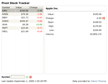
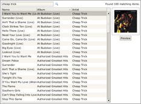
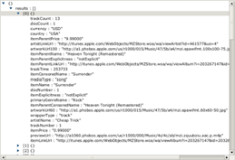
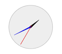
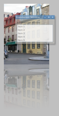

This page contains a collection of Pivot demos. All demos require Java 6 or greater.
Demonstrates a number of commonly used Pivot components.
An example of a simple but practical "real world" application built using Pivot. Monitors stock quotes provided by Yahoo! Finance.

Simple application that allows a user to run search queries against the iTunes Music Store and presents the results in a table view.


Demonstrates charting in Pivot using the JFreeChart chart provider (hosted at http://ixnay.biz).

Demonstrates Pivot used in a real-world context, used to show a news feed and a slide show of client logos (hosted at http://www.satelliteconsulting.com).
Allows users to visually browse a JSON structure using a TreeView component.

Simple example of a Pivot application written using JavaScript.
Demonstrates Pivot's support for drag and drop.
Example of a table row editor that uses a "Family Feud"-like flip effect to edit rows.
Demonstrates Pivot's MovieView component, which is used to present a clock constructed using Pivot's drawing API.

Demonstrates Pivot's ability to handle large data sets of up to 1,000,000 rows.
Demonstrates how to build a simple RSS client in Pivot.
Demonstrates Pivot's support for bi-directional communication between a Pivot application and the browser DOM.
Demonstrates the use of "decorators" in Pivot. Decorators allow a developer to attach additional presentation to components, such as drop shadows, reflections, image effects, etc. This example shows a window with a reflection decorator and a frame with a fade decorator.

Explains how to create a table with fixed columns in Pivot. Fixed columns are handy when displaying tables with many columns.
Demonstrates Pivot's use of ranges to maintain selection state in a ListView component. This is more efficient than maintaining a list of individual selected indexes.